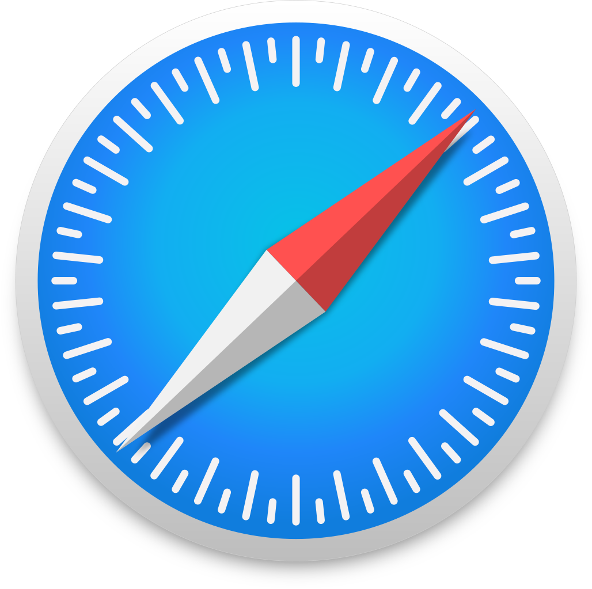

💻 Principales Navegadores
Google Chrome: Rápido, seguro y personalizable.
Firefox: Seguro, veloz y permite abrir varias pestañas con eficiencia.

Safari: Desarrollado por Apple, ofrece gran velocidad y soporte multimedia.
Un navegador web es un programa que nos permite acceder a Internet, visitar páginas, reproducir contenido multimedia, enviar o recibir información, imprimir, entre muchas otras acciones. Entre los más conocidos se encuentran Google Chrome, Mozilla Firefox, Safari, Opera e Internet Explorer.
Un buscador es una herramienta en línea que nos permite encontrar información en Internet. Solo escribimos una palabra o una frase, y el buscador nos muestra páginas que tienen relación con lo que pedimos.
Cuando escribimos una palabra o frase (llamada palabra clave) en un buscador, este compara lo escrito con su base de datos y nos devuelve una lista ordenada de sitios web relacionados.
Gracias a los buscadores, navegar por Internet es mucho más sencillo, ya que permiten encontrar información en cuestión de segundos dentro de la enorme cantidad de páginas que existen.
Google Chrome: Rápido, seguro y personalizable.
Firefox: Seguro, veloz y permite abrir varias pestañas con eficiencia.
Safari: Desarrollado por Apple, ofrece gran velocidad y soporte multimedia.